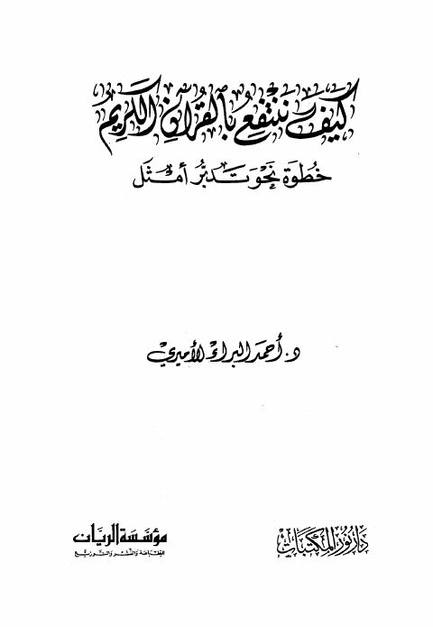

Downloads need an internet connection.
كيف ننتفع بالقرآن الكريم خطوة نحو تدبر الأمثل
Authors: أحمد البراء الأميري
Publishers: مؤسسة الريان دار نور المكتبات
**▫️ العنوان: كيف ننتفع بالقرآن الكريم خطوة نحو تدبر الأمثل** ▪️ المؤلف: #أحمد_البراء_الأميري ▫️ الناشر: #دار_نور_المكتبات • #مؤسسة_الريان ▪️ تاريخ النشر: 1422هـ 2002م ▫️ بلد النشر: جدة، #السعودية • بيروت، #لبنان ▪️ الطبعة: 1 ▫️ عدد الأجزاء: 1 ▪️ الصفحات: 118 ▫️ نوع الوعاء: #كتاب ▪️ التصنيف الرئيسي: #الزهد_والرقائق ۪